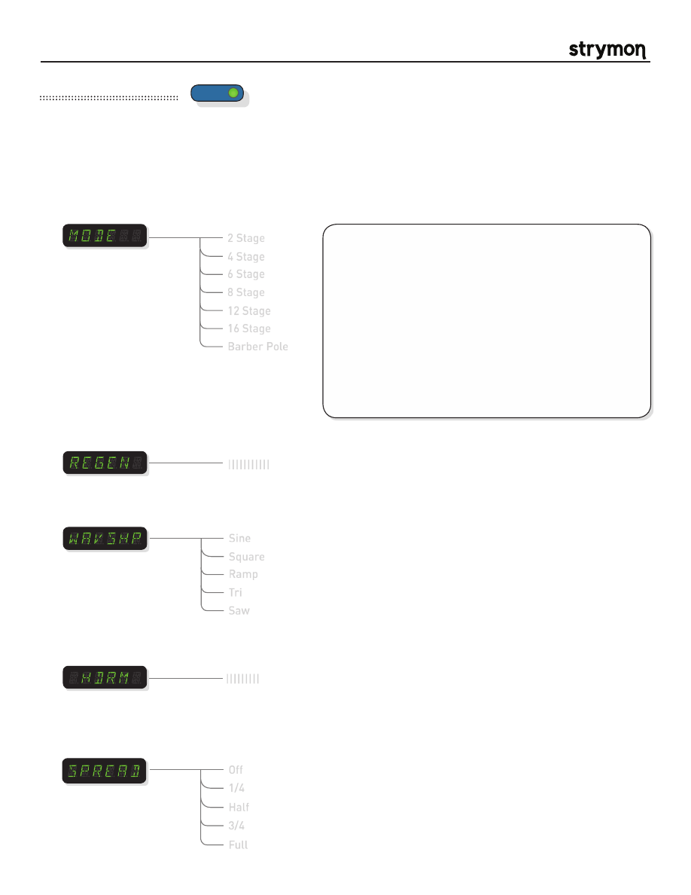

Mobius
-
User Manual
®
pg 12
TYPE
push (bank/BPM)
hold (save)
push (param)
hold (global)
VALUE
PARAM 1
PARAM 2
B
TAP
A
SPEED
DEPTH
LEVEL
BANK DOWN
BANK UP
FILTER
DESTROYER
VIBE
ROTARY
FLANGER
PHASER
CHORUS
FORMANT
AUTOSWELL
VINTAGE TREM
PATTERN TREM
QUADRATURE
®
Mod Machines: Phaser
From the thick and chewy 2, 4 and 6 stage modes, to the rich and swirly 8, 12 and 16 stage modes, the PHASER machine
offers a full palette of traditional and innovative phaser sounds. For added fun, a unique BARBER mode is added, derived
from the frequency shifters developed in the 1970’s.
PARAMETERS:
Spread:
Determines the offset between the Left and Right channel LFO signals. Listen
to the effect it has on the stereo image as you adjust the parameter. Note: Only
applies when using the unit in Stereo Configuration.
2 Stage
4 Stage
6 Stage
8 Stage
12 Stage
16 Stage
Mode
:
Selects the current phaser algorithm.
Barber Pole
Off
Half
1/4
3/4
Full
TIPS & TRICKS:
For classic orange phaser sounds, set MODE
to ‘4 STG’, Depth knob to about 2 o’clock, and the REGEN
param at half or a bit less to taste. Switch to ‘6 STG’ for chewy
funky phasing.
For infinite rising barber pole phaser, set MODE to BARBER,
WAVSHP to RAMP, and set the Depth control to maximum.
Change the WAVSHP to SAW to get infinitely falling barber pole
phaser. Adjust REGEN to dial in the intensity.
Try slow speed SINE or TRI waveforms on the 8, 12, and 16
stage phasers. For maximum swirl, experiment with the
SPREAD param in a stereo setup.
|||||||||||
Regen
:
Adjusts the amount of feedback signal. Adjust high for more extreme phaser sounds.
Sine
Square
Ramp
Tri
Saw
Waveshape
:
Selects the current LFO (low frequency oscillator) waveform to apply to the phase
stages.
|||||||||
Headroom
:
Adjusts the amount of distortion within the phaser circuitry. Set to maximum for the
cleanest phaser tones, and dial back to add the feel and grit of dirtier phase tones.